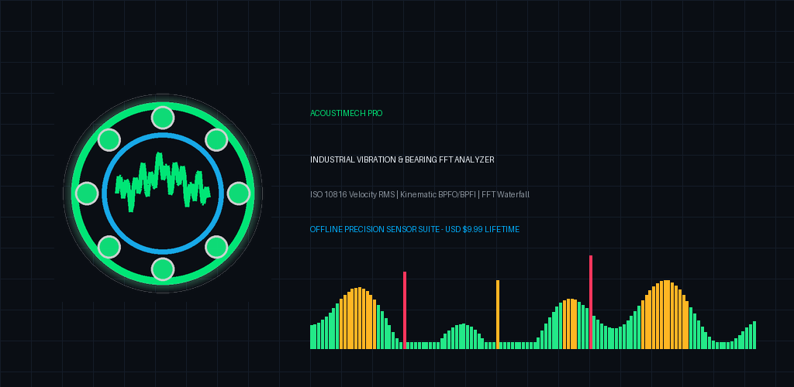
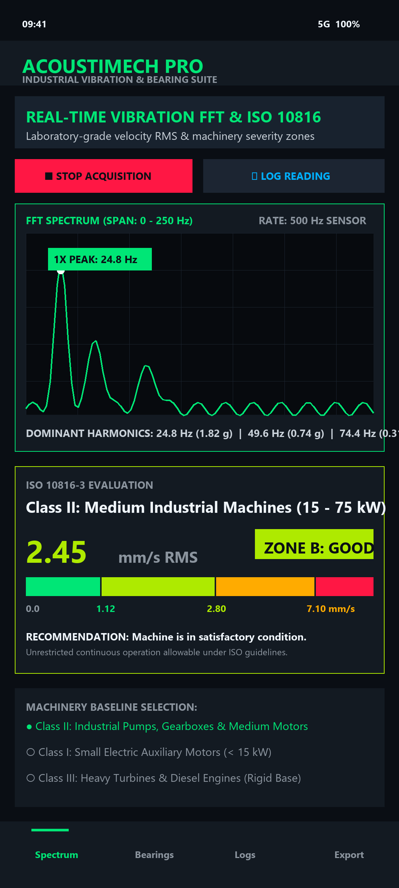
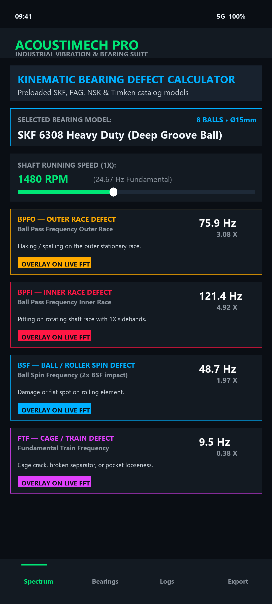
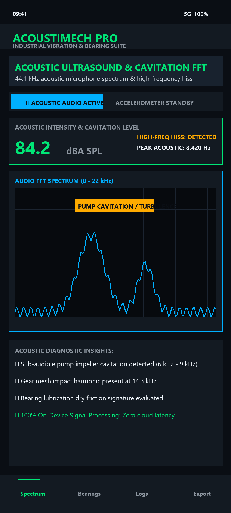
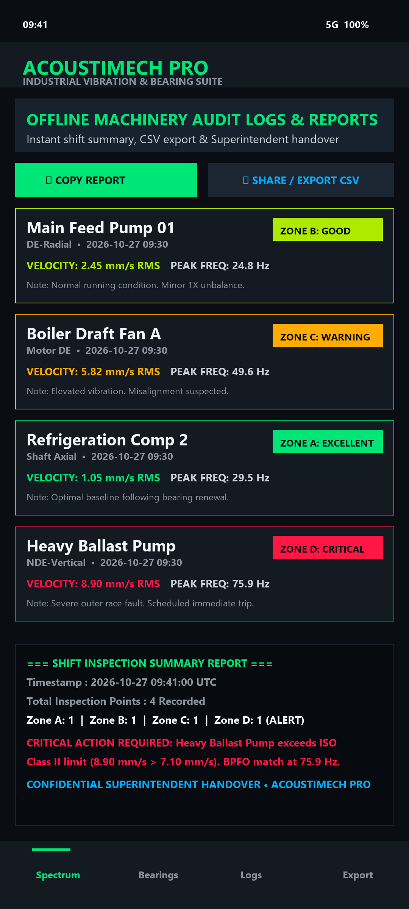

Laboratory-Grade Vibration Intelligence in Your Palm
Replace cumbersome $5,000+ vibration meters with AcoustiMech Pro. Powered by high-rate hardware MEMS accelerometer integration, acoustic microphone FFT, and instant ISO 10816 severity classification.

Engineered for Maritime & Plant Reliability
Built strictly offline for confidential engine rooms, offshore vessels, refineries, and air-gapped industrial cleanrooms.
Real-Time FFT Waterfall
Radix-2 Cooley-Tukey Fast Fourier Transform engine with Hann windowing, automatic 1X/2X/3X RPM harmonic peak detection, and scrolling waterfall spectrum canvas.
ISO 10816 Severity Meter
Instant Velocity RMS (mm/s) integration across Class I, II, III, and IV machinery with color-coded severity zones: Zone A (Good), B (Acceptable), C (Warning), and D (Critical Alarm).
Bearing Kinematics
Preloaded SKF, FAG, NSK, and Timken database calculating exact BPFO, BPFI, BSF, and FTF defect frequencies with direct visual overlay onto the live FFT canvas.
Acoustic Ultrasound Mode
44.1 kHz acoustic microphone analysis detecting high-frequency bearing hiss, gear mesh impacts, and sub-audible pump cavitation.
Shift Handover Reports
Record multi-point inspection readings (Drive End, Non-Drive End, Axial, Radial) with instant CSV export and formatted summary generation for superintendent handover.
100% Zero-Cloud Privacy
Zero internet permissions required for analysis. No subscriptions, no telemetry, no tracking SDKs. One-time purchase, lifetime ownership.
High-Fidelity Industrial HUD
Designed with tactical high-contrast dark theme optimized for low-light engine rooms and outdoor sunlight readability.




Engineering Architecture
| Package Name | com.acoustimech.pro |
| Target Architecture | Modern Android 15 & 16 (compileSdk 36, minSdk 26) |
| UI Framework | 100% Jetpack Compose (BOM 2026.03.01) + Material 3 |
| Sensor Sampling | Hardware Accelerometer (SENSOR_DELAY_FASTEST, up to 500+ Hz) |
| Acoustic Sampling | 16-bit PCM AudioRecord mono at 44,100 Hz |
| Signal Math | Cooley-Tukey Radix-2 FFT, Hann Windowing, Peak Extraction |
| Vibration Standard | ISO 10816-1 / ISO 10816-3 (Classes I, II, III, IV) |
| Pricing Model | One-time paid $9.99 (No Ads, No In-App Subscriptions) |
Ready to Elevate Your Machinery Diagnostics?
Install AcoustiMech Pro directly from Google Play. Pay once, own forever.